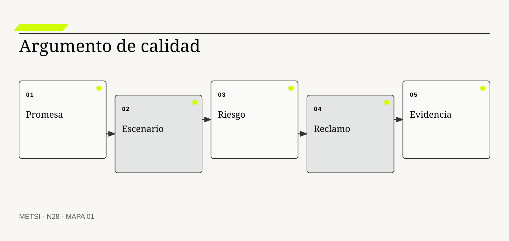
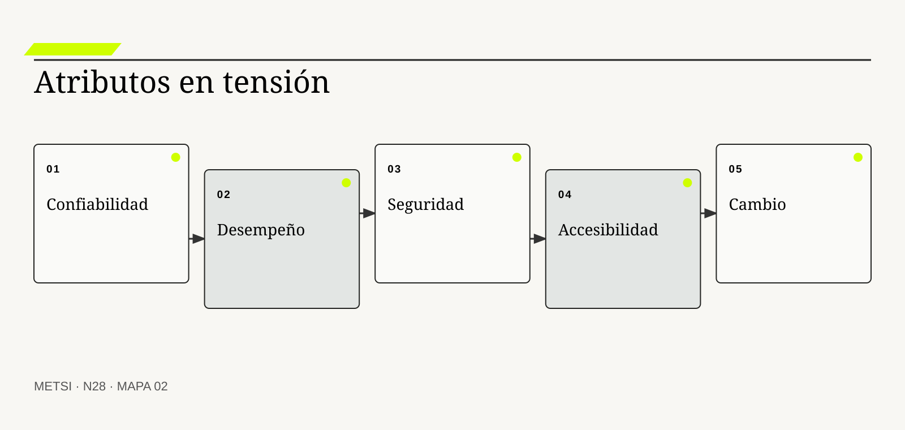
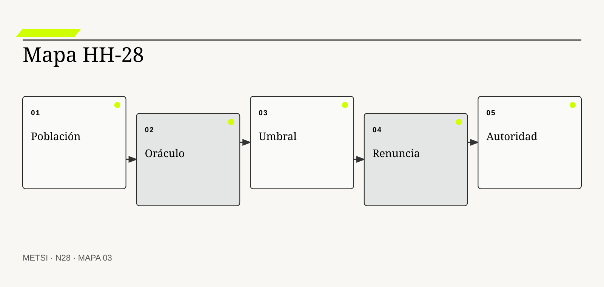

II
ISO/IEC
Actualiza el modelo de calidad de productos y sistemas TIC.

N28 construye evidencia de calidad según riesgo, hace visibles atributos en tensión y vincula cada afirmación con escenarios, umbrales, incertidumbre…
Evidencia de calidad según riesgo y atributos en tensión
Ruta de lectura: problema, distinciones, decisiones, prueba, transferencia y preparación.
Nota. SIN NUM. identifica aparatos de orientación y referencia.
Seis voces para ampliar, contrastar y discutir N28.
Actualiza el modelo de calidad de productos y sistemas TIC.
Relacionan atributos de calidad con escenarios y arquitectura.
Vincula objetivos, preguntas y métricas.

Integra seguridad, gobierno y riesgo.

Define criterios verificables de accesibilidad web.
Relacionan desempeño de entrega con estabilidad y aprendizaje.
N28 no resume estas fuentes ni las convierte en receta. Las pone en tensión para construir juicio profesional.
¿Qué evidencia alcanza para sostener calidad cuando confiabilidad, seguridad, accesibilidad, desempeño y capacidad de cambio no pueden maximizarse al mismo tiempo?

N28 construye evidencia de calidad según riesgo, hace visibles atributos en tensión y vincula cada afirmación con escenarios, umbrales, incertidumbre y autoridad.
Hotel Horizonte despliega una nueva regla de asignación. Las pruebas funcionales pasan, la cobertura aumenta y el tiempo promedio mejora. En el primer fin de semana completo, una huésped que usa lector de pantalla no puede confirmar la habitación y el turno nocturno tarda cuarenta minutos en reconstruir qué ocurrió.
El equipo había probado funciones, no la calidad de la promesa bajo riesgo. Accesibilidad, recuperabilidad, observabilidad y operabilidad quedaron fuera porque ningún defecto aislado impedía el despliegue. La evidencia respondía preguntas distintas de las que importaban.
Calidad no es perfección ni una suma de atributos. Es una afirmación situada sobre adecuación, acompañada por evidencia proporcional al daño y por decisiones explícitas cuando los atributos entran en tensión.
El equipo identifica escenarios críticos y formula reclamos de calidad. Para cada uno registra población, atributo, riesgo, evidencia, umbral, incertidumbre y autoridad. Las pruebas se complementan con observación, revisión, simulación y experiencia de uso.
La decisión cambia. El despliegue se limita hasta resolver accesibilidad y recuperación, mientras se conserva la mejora de desempeño en un segmento controlado. La tensión deja de resolverse por intuición o por el indicador más visible.
N28 recibe contratos verificables y pregunta qué confianza permiten sostener. La respuesta no es más prueba en abstracto, sino una arquitectura de evidencia gobernada por riesgo.
HH-28 selecciona tres promesas críticas: asignar sin discriminación, recuperar ante estados contradictorios y conservar respuesta durante picos. Cada promesa se convierte en un reclamo con escenarios, atributos, evidencia y umbrales. La calidad se defiende como argumento revisable y no como certificado acumulativo.
N28 construye evidencia de calidad según riesgo, hace visibles atributos en tensión y vincula cada afirmación con escenarios, umbrales, incertidumbre y autoridad.
N27 deja evidencia y decisiones abiertas que N28 utiliza sin reabrir su contenido. N28 construye evidencia de calidad según riesgo, hace visibles atributos en tensión y vincula cada afirmación con escenarios, umbrales, incertidumbre y autoridad.
N29 utilizará esos reclamos para gobernar integración, despliegue, infraestructura, aprobación y rollback. N28 no diseña todavía el mecanismo de liberación.
ISO/IEC actualiza el modelo de calidad de productos y sistemas TIC. En N28, ese aporte pone a prueba decisiones concretas y no funciona como respaldo ornamental. Su alcance se conserva en N28: ninguna referencia sustituye la evidencia del caso ni la autoridad necesaria para intervenir.
ISO/IEC define calidad en uso desde resultados y contexto. En N28, ese aporte pone a prueba decisiones concretas y no funciona como respaldo ornamental. Su alcance se conserva en N28: ninguna referencia sustituye la evidencia del caso ni la autoridad necesaria para intervenir.
Bass, L., Clements, P. y Kazman, R. relacionan atributos de calidad con escenarios y decisiones arquitectónicas. En N28, ese aporte pone a prueba decisiones concretas y no funciona como respaldo ornamental. Su alcance se conserva en N28: ninguna referencia sustituye la evidencia del caso ni la autoridad necesaria para intervenir.
Basili, V. R., Caldiera, G. y Rombach, H. D. vinculan objetivos, preguntas y medidas. En N28, ese aporte pone a prueba decisiones concretas y no funciona como respaldo ornamental. Su alcance se conserva en N28: ninguna referencia sustituye la evidencia del caso ni la autoridad necesaria para intervenir.
ISO organiza principios y proceso de gestión de riesgo. En N28, ese aporte pone a prueba decisiones concretas y no funciona como respaldo ornamental. Su alcance se conserva en N28: ninguna referencia sustituye la evidencia del caso ni la autoridad necesaria para intervenir.
NIST incorpora gobierno al manejo de riesgo de ciberseguridad. En N28, ese aporte pone a prueba decisiones concretas y no funciona como respaldo ornamental. Su alcance se conserva en N28: ninguna referencia sustituye la evidencia del caso ni la autoridad necesaria para intervenir.
NIST integra prácticas de desarrollo seguro al ciclo de vida. En N28, ese aporte pone a prueba decisiones concretas y no funciona como respaldo ornamental. Su alcance se conserva en N28: ninguna referencia sustituye la evidencia del caso ni la autoridad necesaria para intervenir.
W3C define criterios verificables de accesibilidad. En N28, ese aporte pone a prueba decisiones concretas y no funciona como respaldo ornamental. Su alcance se conserva en N28: ninguna referencia sustituye la evidencia del caso ni la autoridad necesaria para intervenir.
Google conecta confiabilidad, objetivos y operación. En N28, ese aporte pone a prueba decisiones concretas y no funciona como respaldo ornamental. Su alcance se conserva en N28: ninguna referencia sustituye la evidencia del caso ni la autoridad necesaria para intervenir.
Forsgren, N., Humble, J. y Kim, G. relacionan desempeño de entrega con estabilidad y aprendizaje. En N28, ese aporte pone a prueba decisiones concretas y no funciona como respaldo ornamental. Su alcance se conserva en N28: ninguna referencia sustituye la evidencia del caso ni la autoridad necesaria para intervenir.
ISO/IEC/IEEE define procesos de prueba a lo largo del ciclo de vida. En N28, ese aporte pone a prueba decisiones concretas y no funciona como respaldo ornamental. Su alcance se conserva en N28: ninguna referencia sustituye la evidencia del caso ni la autoridad necesaria para intervenir.
Leveson, N. analiza seguridad mediante controles y condiciones sistémicas. En N28, ese aporte pone a prueba decisiones concretas y no funciona como respaldo ornamental. Su alcance se conserva en N28: ninguna referencia sustituye la evidencia del caso ni la autoridad necesaria para intervenir.

Calidad situada es la adecuación de una capacidad para actores, propósitos y condiciones explícitas. La definición fija el objeto de decisión. Si el equipo de N28 no puede expresar qué compromiso organiza, la categoría funciona como etiqueta y no como instrumento.
No es ausencia total de defectos ni conformidad genérica con una lista. La distinción evita que una palabra familiar oculte otro mecanismo. En N28, confundirlos cambia qué se observa, qué se acepta como avance y quién debe intervenir.
En calidad situada, el recorrido causal debe mostrar qué condición habilita la acción, qué transformación ocurre y quién absorbe el resultado. Relaciona propiedades del sistema con consecuencias en uso y operación. Si un salto depende sólo de una explicación oral, la estrategia todavía no puede gobernarlo.
La evidencia relevante para calidad situada no se limita al resultado promedio. Escenarios representativos y adversos sostienen la afirmación. N28 busca además casos negativos, diferencias entre poblaciones y señales de que la explicación elegida podría ser insuficiente.
Ejemplo. El ingreso puede ser rápido y aun así inaccesible o irreparable. En N28, el episodio vuelve visible la relación entre ritmo, autoridad, evidencia y capacidad de reparación.
El tradeoff central de calidad situada aparece entre anticipar y preservar opciones. Anticipar puede reducir coordinación y también fijar una premisa prematura; preservar opciones puede producir aprendizaje y también demorar una protección necesaria. La elección debe declarar cuál de esos costos acepta, durante cuánto tiempo y para quién.
La auditoría de calidad situada termina con una pregunta de uso: ¿qué podría decidir ahora una persona que antes no podía? En N28, la respuesta debe nombrar una acción, una restricción y una evidencia, no sólo una comprensión mejorada.
Operacionalizar calidad situada requiere asignar una unidad observable. El equipo define qué episodio contará, desde qué momento, con qué población y bajo qué fuente. Después compara al menos un caso ordinario con otro que fuerce excepción. Esta precisión en N28 evita que una conclusión general se sostenga sólo en ejemplos convenientes.
La decisión profesional no termina en adoptar calidad situada. Se compara una ruta principal con una explicación rival, se explicita quién queda expuesto y se conserva un modo de revisar. Los propósitos compiten y requieren prioridades institucionales. El límite forma parte del diseño y no una nota posterior.
Un atributo de calidad nombra una propiedad evaluable que influye en el valor y el riesgo del sistema. Conviene comenzar por su función profesional. Si el equipo de N28 no puede expresar qué compromiso organiza, la categoría funciona como etiqueta y no como instrumento.
No es una cualidad aspiracional sin medida ni contexto. El contraste importa porque conduce a pruebas distintas. En N28, confundirlos cambia qué se observa, qué se acepta como avance y quién debe intervenir.
El mecanismo de atributo de calidad no se presume por el nombre. Se operacionaliza mediante escenarios, estímulos, respuestas y umbrales. Debe localizarse dónde comienza, qué relaciones activa, qué demora introduce y qué capacidad de reparación queda disponible cuando la expectativa no se cumple.
Una afirmación sobre atributo de calidad gana fuerza cuando puede reconstruirse desde fuentes independientes. Medidas repetibles y evidencia de campo permiten contrastarlo. La ausencia de señal también se interpreta: puede significar estabilidad, mala observación o exclusión del caso que más importa.
Ejemplo. Recuperabilidad se observa ante un estado de reserva indeterminado. En N28, el episodio vuelve visible la relación entre ritmo, autoridad, evidencia y capacidad de reparación.
La escala modifica atributo de calidad. Una solución válida para un equipo puede fallar cuando atraviesa sedes, turnos o proveedores porque aumenta la distancia entre señal y autoridad. Antes de ampliar, N28 prueba si la misma decisión conserva significado y reparación bajo esa nueva distribución.
Para evitar consenso aparente, atributo de calidad se revisa con alguien afectado y con alguien responsable de reparar. Las dos perspectivas pueden valorar resultados diferentes y obligan a declarar la prioridad elegida.
En la práctica, atributo de calidad atraviesa más de un área. Se identifican handoffs, esperas, decisiones y datos que cada participante puede ver. Cuando dos áreas usan evidencia distinta en N28, el expediente conserva la divergencia hasta determinar si representa error, perspectiva legítima o una brecha que la estrategia debe resolver.
En una revisión, atributo de calidad debe responder tres preguntas: qué mejora, qué desplaza y qué vuelve más difícil de revertir. Una métrica aislada rara vez representa todo el atributo. Si esas respuestas cambian, también debe cambiar el compromiso, aunque el trabajo previo haya sido técnicamente correcto.
Un escenario de calidad describe estímulo, contexto, componente afectado, respuesta y medida esperada. El concepto adquiere valor cuando cambia una decisión. Si el equipo de N28 no puede expresar qué compromiso organiza, la categoría funciona como etiqueta y no como instrumento.
No se reduce a caso de uso ordinario ni a requisito vago. Su vecino conceptual puede parecer equivalente y no lo es. En N28, confundirlos cambia qué se observa, qué se acepta como avance y quién debe intervenir.
Comprender escenario de calidad exige seguir la decisión en el tiempo. Convierte una propiedad transversal en una situación discutible. El análisis distingue condición, intervención, señal temprana y consecuencia para evitar atribuir a una práctica un efecto producido por otro cambio simultáneo.
La prueba de escenario de calidad debe formularse antes de conocer el resultado. Pruebas, simulaciones y observación reproducen sus condiciones. Se registra qué observación sostendría continuar, cuál obligaría a adaptar y cuál activaría detención o escalamiento.
Ejemplo. Durante un pico, identidad falla y Recepción mantiene una vía segura en cinco minutos. En N28, el episodio vuelve visible la relación entre ritmo, autoridad, evidencia y capacidad de reparación.
El tiempo también altera escenario de calidad. Una evidencia suficiente para explorar puede ser insuficiente para operar de forma permanente. Por eso se separan prueba local, compromiso transitorio y condición estable, y cada estado conserva fecha, alcance y responsable de revisión.
El registro de escenario de calidad conserva una explicación rival. Si esa alternativa predice mejor el episodio siguiente, el equipo cambia de curso sin reescribir retrospectivamente lo que creía saber.
La gobernanza de escenario de calidad incluye quién puede proponer, aprobar, ejecutar, observar y reparar. Esas funciones no se presumen por cargo ni por permiso técnico. N28 las prueba en un escenario donde falta la persona habitual, porque una capacidad que sólo funciona con conocimiento privado todavía no pertenece a la organización.
El juicio sobre escenario de calidad incluye distribución de consecuencias. Escenarios conocidos no cubren todas las combinaciones futuras. Una mejora agregada no alcanza si concentra espera, riesgo o trabajo invisible en un grupo sin autoridad para discutir la decisión.
Riesgo de calidad combina incertidumbre y consecuencia sobre una promesa relevante. La definición fija el objeto de decisión. Si el equipo de N28 no puede expresar qué compromiso organiza, la categoría funciona como etiqueta y no como instrumento.
No equivale a probabilidad técnica ni severidad abstracta. La distinción evita que una palabra familiar oculte otro mecanismo. En N28, confundirlos cambia qué se observa, qué se acepta como avance y quién debe intervenir.
La explicación operacional de riesgo de calidad conecta personas, reglas y tecnología. Prioriza evidencia y control según población, reversibilidad, exposición y daño. Esa conexión permite decidir qué parte puede modificarse localmente y cuál requiere coordinación con otras autoridades o capacidades.
Para auditar riesgo de calidad, conviene combinar evidencia de diseño, ejecución y consecuencia. Historias de incidentes, amenazas y análisis de impacto sostienen su estimación. Ninguna fuente domina automáticamente; una especificación correcta puede convivir con una operación dañina.
Ejemplo. Una reasignación accesible tiene baja frecuencia y consecuencia alta. En N28, el episodio vuelve visible la relación entre ritmo, autoridad, evidencia y capacidad de reparación.
Existe además una dimensión política en riesgo de calidad. La opción más eficiente puede reducir la capacidad de una persona para cuestionar una decisión o trasladar trabajo sin reconocerlo. N28 registra esa distribución y no la esconde dentro de un indicador agregado.
Una prueba adversa de riesgo de calidad introduce demora, ausencia de autoridad o dato incompleto. El objetivo de N28 no es cubrir todas las fallas, sino revelar si la estrategia mantiene una salida segura fuera del camino ordinario.
El indicador de riesgo de calidad se elige después de formular la decisión. Puede combinar tiempo, calidad, distribución y costo de reparación. Una cifra aislada rara vez explica el mecanismo. En N28, la lectura conjunta de señales evita optimizar velocidad mientras aumenta retrabajo, exclusión o dependencia.
La condición de cierre de riesgo de calidad no es perfección. Las estimaciones reflejan información y poder disponibles. Es evidencia suficiente para el uso previsto, riesgo residual aceptado por autoridad y una ruta clara cuando el supuesto deje de cumplirse.

Un reclamo de calidad es una afirmación concreta sobre el comportamiento aceptable de una capacidad. Conviene comenzar por su función profesional. Si el equipo de N28 no puede expresar qué compromiso organiza, la categoría funciona como etiqueta y no como instrumento.
No es un eslogan de excelencia ni una certificación autosuficiente. El contraste importa porque conduce a pruebas distintas. En N28, confundirlos cambia qué se observa, qué se acepta como avance y quién debe intervenir.
Para que reclamo de calidad sea algo más que una etiqueta, debe existir una cadena examinable. Vincula escenario, atributo, umbral, evidencia y responsable. La cadena incluye supuestos, handoffs y efectos laterales que una descripción ideal suele omitir.
El equipo no declara resuelto reclamo de calidad por acuerdo retórico. La trazabilidad entre reclamo y evidencia permite revisión independiente. Una persona ajena al diseño debe poder repetir la prueba y comprender por qué el resultado habilita una decisión concreta.
Ejemplo. El servicio recupera una reserva indeterminada sin perder accesibilidad. En N28, el episodio vuelve visible la relación entre ritmo, autoridad, evidencia y capacidad de reparación.
La mantenibilidad de reclamo de calidad se prueba mediante cambio deliberado. Se modifica una regla, una fuente o una dependencia y se observa quién detecta el impacto, cuánto tarda en responder y qué información necesita. En N28, si la respuesta depende de memoria privada, la capacidad todavía es frágil.
El costo de reclamo de calidad se observa tanto en presupuesto como en atención, espera, coordinación y dependencia. Lo que no figura en una factura puede seguir siendo el costo que define la viabilidad.
La transición asociada con reclamo de calidad necesita un estado intermedio explícito. Durante ese período conviven reglas, versiones o capacidades diferentes. N28 declara cuál rige para cada población, cómo se comunica y qué contingencia protege a quien podría quedar entre ambos sistemas.
El análisis de reclamo de calidad evita dos extremos: conservar por inercia y cambiar por identidad metodológica. Un reclamo puede quedar refutado por evidencia nueva. Entre ambos queda una decisión provisional con fecha, responsable y prueba de revisión.
Evidencia suficiente es el conjunto proporcional de observaciones que permite una decisión bajo incertidumbre explícita. El concepto adquiere valor cuando cambia una decisión. Si el equipo de N28 no puede expresar qué compromiso organiza, la categoría funciona como etiqueta y no como instrumento.
No significa cantidad máxima de pruebas ni certeza absoluta. Su vecino conceptual puede parecer equivalente y no lo es. En N28, confundirlos cambia qué se observa, qué se acepta como avance y quién debe intervenir.
El valor de evidencia suficiente aparece al contrastar alternativas. Combina métodos que cubren mecanismos, contextos y fallas diferentes. Si dos opciones producen el mismo entregable inmediato, el mecanismo permite compararlas por aprendizaje, dependencia, riesgo residual y posibilidad de salida.
La suficiencia de evidencia para evidencia suficiente depende del costo de equivocarse. Repetibilidad, pertinencia, independencia y límites sostienen su fuerza. A mayor irreversibilidad o desigualdad de daño, mayor contraste, supervisión y autoridad se requieren.
Ejemplo. Pruebas automáticas, ensayo operativo y evaluación accesible sustentan el despliegue. En N28, el episodio vuelve visible la relación entre ritmo, autoridad, evidencia y capacidad de reparación.
Finalmente, evidencia suficiente debe convivir con otras decisiones. Optimizarla de manera aislada puede empeorar flujo, seguridad o comprensión. El expediente N28 explicita dependencias y evita que una mejora local se presente como outcome completo del sistema.
La revisión de evidencia suficiente fija fecha y desencadenante. Puede ocurrir por incidente, cambio normativo, nueva población o evidencia acumulada. Sin esa regla en N28, una decisión provisional se vuelve permanente por olvido.
El cierre de evidencia suficiente debe sobrevivir a una revisión independiente. La evidencia, las decisiones y los límites se almacenan de manera que otra persona pueda cuestionarlos. En N28, la trazabilidad no busca eliminar desacuerdo; busca que el desacuerdo se concentre en supuestos examinables y no en recuerdos incompatibles.
La estrategia debe poder explicar por qué evidencia suficiente recibe cierta inversión y no otra. La suficiencia depende del riesgo y de la reversibilidad. Esa explicación conecta valor, costo, aprendizaje y reparación, y permanece abierta a evidencia nueva.
Un oráculo de prueba establece cómo reconocer un resultado aceptable o una desviación significativa. La definición fija el objeto de decisión. Si el equipo de N28 no puede expresar qué compromiso organiza, la categoría funciona como etiqueta y no como instrumento.
No siempre coincide con una salida exacta calculada de antemano. La distinción evita que una palabra familiar oculte otro mecanismo. En N28, confundirlos cambia qué se observa, qué se acepta como avance y quién debe intervenir.
En oráculo de prueba, el recorrido causal debe mostrar qué condición habilita la acción, qué transformación ocurre y quién absorbe el resultado. Puede usar invariantes, comparación, propiedades, expertos o evidencia histórica. Si un salto depende sólo de una explicación oral, la estrategia todavía no puede gobernarlo.
La evidencia relevante para oráculo de prueba no se limita al resultado promedio. Casos límite y discrepancias muestran la calidad del oráculo. N28 busca además casos negativos, diferencias entre poblaciones y señales de que la explicación elegida podría ser insuficiente.
Ejemplo. La asignación respeta restricciones aun cuando existan varias habitaciones válidas. En N28, el episodio vuelve visible la relación entre ritmo, autoridad, evidencia y capacidad de reparación.
El tradeoff central de oráculo de prueba aparece entre anticipar y preservar opciones. Anticipar puede reducir coordinación y también fijar una premisa prematura; preservar opciones puede producir aprendizaje y también demorar una protección necesaria. La elección debe declarar cuál de esos costos acepta, durante cuánto tiempo y para quién.
La auditoría de oráculo de prueba termina con una pregunta de uso: ¿qué podría decidir ahora una persona que antes no podía? En N28, la respuesta debe nombrar una acción, una restricción y una evidencia, no sólo una comprensión mejorada.
Operacionalizar oráculo de prueba requiere asignar una unidad observable. El equipo define qué episodio contará, desde qué momento, con qué población y bajo qué fuente. Después compara al menos un caso ordinario con otro que fuerce excepción. Esta precisión en N28 evita que una conclusión general se sostenga sólo en ejemplos convenientes.
La decisión profesional no termina en adoptar oráculo de prueba. Se compara una ruta principal con una explicación rival, se explicita quién queda expuesto y se conserva un modo de revisar. Oráculos débiles pueden legitimar resultados incorrectos. El límite forma parte del diseño y no una nota posterior.
Confiabilidad y recuperación expresan continuidad, detección, restauración y aprendizaje ante fallas. Conviene comenzar por su función profesional. Si el equipo de N28 no puede expresar qué compromiso organiza, la categoría funciona como etiqueta y no como instrumento.
No son sólo disponibilidad promedio ni tiempo técnico de reinicio. El contraste importa porque conduce a pruebas distintas. En N28, confundirlos cambia qué se observa, qué se acepta como avance y quién debe intervenir.
El mecanismo de confiabilidad y recuperación no se presume por el nombre. Relacionan modo de falla con impacto, degradación y reparación. Debe localizarse dónde comienza, qué relaciones activa, qué demora introduce y qué capacidad de reparación queda disponible cuando la expectativa no se cumple.
Una afirmación sobre confiabilidad y recuperación gana fuerza cuando puede reconstruirse desde fuentes independientes. Ejercicios, incidentes y tiempos end-to-end ofrecen evidencia. La ausencia de señal también se interpreta: puede significar estabilidad, mala observación o exclusión del caso que más importa.
Ejemplo. El hotel continúa ingreso y reconcilia después sin duplicar reservas. En N28, el episodio vuelve visible la relación entre ritmo, autoridad, evidencia y capacidad de reparación.
La escala modifica confiabilidad y recuperación. Una solución válida para un equipo puede fallar cuando atraviesa sedes, turnos o proveedores porque aumenta la distancia entre señal y autoridad. Antes de ampliar, N28 prueba si la misma decisión conserva significado y reparación bajo esa nueva distribución.
Para evitar consenso aparente, confiabilidad y recuperación se revisa con alguien afectado y con alguien responsable de reparar. Las dos perspectivas pueden valorar resultados diferentes y obligan a declarar la prioridad elegida.
En la práctica, confiabilidad y recuperación atraviesa más de un área. Se identifican handoffs, esperas, decisiones y datos que cada participante puede ver. Cuando dos áreas usan evidencia distinta en N28, el expediente conserva la divergencia hasta determinar si representa error, perspectiva legítima o una brecha que la estrategia debe resolver.
En una revisión, confiabilidad y recuperación debe responder tres preguntas: qué mejora, qué desplaza y qué vuelve más difícil de revertir. Una recuperación rápida puede perder integridad o trasladar trabajo. Si esas respuestas cambian, también debe cambiar el compromiso, aunque el trabajo previo haya sido técnicamente correcto.

Desempeño y capacidad describen respuesta y sostenimiento bajo cargas y patrones concretos. El concepto adquiere valor cuando cambia una decisión. Si el equipo de N28 no puede expresar qué compromiso organiza, la categoría funciona como etiqueta y no como instrumento.
No se reducen a velocidad en laboratorio. Su vecino conceptual puede parecer equivalente y no lo es. En N28, confundirlos cambia qué se observa, qué se acepta como avance y quién debe intervenir.
Comprender desempeño y capacidad exige seguir la decisión en el tiempo. Incluyen volumen, concurrencia, colas, variabilidad y degradación. El análisis distingue condición, intervención, señal temprana y consecuencia para evitar atribuir a una práctica un efecto producido por otro cambio simultáneo.
La prueba de desempeño y capacidad debe formularse antes de conocer el resultado. Pruebas de carga y datos de producción contrastan escenarios. Se registra qué observación sostendría continuar, cuál obligaría a adaptar y cuál activaría detención o escalamiento.
Ejemplo. El ingreso conserva umbral durante llegadas concentradas. En N28, el episodio vuelve visible la relación entre ritmo, autoridad, evidencia y capacidad de reparación.
El tiempo también altera desempeño y capacidad. Una evidencia suficiente para explorar puede ser insuficiente para operar de forma permanente. Por eso se separan prueba local, compromiso transitorio y condición estable, y cada estado conserva fecha, alcance y responsable de revisión.
El registro de desempeño y capacidad conserva una explicación rival. Si esa alternativa predice mejor el episodio siguiente, el equipo cambia de curso sin reescribir retrospectivamente lo que creía saber.
La gobernanza de desempeño y capacidad incluye quién puede proponer, aprobar, ejecutar, observar y reparar. Esas funciones no se presumen por cargo ni por permiso técnico. N28 las prueba en un escenario donde falta la persona habitual, porque una capacidad que sólo funciona con conocimiento privado todavía no pertenece a la organización.
El juicio sobre desempeño y capacidad incluye distribución de consecuencias. Optimizar promedio puede perjudicar colas extremas o accesibilidad. Una mejora agregada no alcanza si concentra espera, riesgo o trabajo invisible en un grupo sin autoridad para discutir la decisión.
Seguridad, privacidad y accesibilidad son condiciones de calidad que protegen derechos y participación. La definición fija el objeto de decisión. Si el equipo de N28 no puede expresar qué compromiso organiza, la categoría funciona como etiqueta y no como instrumento.
No constituyen controles finales separados de la experiencia. La distinción evita que una palabra familiar oculte otro mecanismo. En N28, confundirlos cambia qué se observa, qué se acepta como avance y quién debe intervenir.
La explicación operacional de seguridad, privacidad y accesibilidad conecta personas, reglas y tecnología. Se incorporan a escenarios, arquitectura, prueba y operación. Esa conexión permite decidir qué parte puede modificarse localmente y cuál requiere coordinación con otras autoridades o capacidades.
Para auditar seguridad, privacidad y accesibilidad, conviene combinar evidencia de diseño, ejecución y consecuencia. Revisión especializada y participación de poblaciones afectadas aportan evidencia. Ninguna fuente domina automáticamente; una especificación correcta puede convivir con una operación dañina.
Ejemplo. Una confirmación protege datos y funciona con tecnologías de asistencia. En N28, el episodio vuelve visible la relación entre ritmo, autoridad, evidencia y capacidad de reparación.
Existe además una dimensión política en seguridad, privacidad y accesibilidad. La opción más eficiente puede reducir la capacidad de una persona para cuestionar una decisión o trasladar trabajo sin reconocerlo. N28 registra esa distribución y no la esconde dentro de un indicador agregado.
Una prueba adversa de seguridad, privacidad y accesibilidad introduce demora, ausencia de autoridad o dato incompleto. El objetivo de N28 no es cubrir todas las fallas, sino revelar si la estrategia mantiene una salida segura fuera del camino ordinario.
El indicador de seguridad, privacidad y accesibilidad se elige después de formular la decisión. Puede combinar tiempo, calidad, distribución y costo de reparación. Una cifra aislada rara vez explica el mecanismo. En N28, la lectura conjunta de señales evita optimizar velocidad mientras aumenta retrabajo, exclusión o dependencia.
La condición de cierre de seguridad, privacidad y accesibilidad no es perfección. Los controles pueden entrar en tensión y necesitan alternativas seguras. Es evidencia suficiente para el uso previsto, riesgo residual aceptado por autoridad y una ruta clara cuando el supuesto deje de cumplirse.
Mantenibilidad y evolutividad expresan la capacidad de comprender, cambiar y verificar sin riesgo desproporcionado. Conviene comenzar por su función profesional. Si el equipo de N28 no puede expresar qué compromiso organiza, la categoría funciona como etiqueta y no como instrumento.
No equivalen a código limpio ni velocidad de entrega aislada. El contraste importa porque conduce a pruebas distintas. En N28, confundirlos cambia qué se observa, qué se acepta como avance y quién debe intervenir.
Para que mantenibilidad y evolutividad sea algo más que una etiqueta, debe existir una cadena examinable. Dependencias, modularidad, pruebas y conocimiento distribuido condicionan el cambio. La cadena incluye supuestos, handoffs y efectos laterales que una descripción ideal suele omitir.
El equipo no declara resuelto mantenibilidad y evolutividad por acuerdo retórico. Tiempo de modificación, tasa de falla y ejercicios de sustitución muestran capacidad. Una persona ajena al diseño debe poder repetir la prueba y comprender por qué el resultado habilita una decisión concreta.
Ejemplo. Agregar un estado no obliga a coordinar todos los canales a la vez. En N28, el episodio vuelve visible la relación entre ritmo, autoridad, evidencia y capacidad de reparación.
La mantenibilidad de mantenibilidad y evolutividad se prueba mediante cambio deliberado. Se modifica una regla, una fuente o una dependencia y se observa quién detecta el impacto, cuánto tarda en responder y qué información necesita. En N28, si la respuesta depende de memoria privada, la capacidad todavía es frágil.
El costo de mantenibilidad y evolutividad se observa tanto en presupuesto como en atención, espera, coordinación y dependencia. Lo que no figura en una factura puede seguir siendo el costo que define la viabilidad.
La transición asociada con mantenibilidad y evolutividad necesita un estado intermedio explícito. Durante ese período conviven reglas, versiones o capacidades diferentes. N28 declara cuál rige para cada población, cómo se comunica y qué contingencia protege a quien podría quedar entre ambos sistemas.
El análisis de mantenibilidad y evolutividad evita dos extremos: conservar por inercia y cambiar por identidad metodológica. La flexibilidad excesiva puede aumentar complejidad y ambigüedad. Entre ambos queda una decisión provisional con fecha, responsable y prueba de revisión.
Una tensión entre atributos aparece cuando mejorar una propiedad altera costo, riesgo o desempeño de otra. El concepto adquiere valor cuando cambia una decisión. Si el equipo de N28 no puede expresar qué compromiso organiza, la categoría funciona como etiqueta y no como instrumento.
No es excusa para aceptar cualquier compromiso. Su vecino conceptual puede parecer equivalente y no lo es. En N28, confundirlos cambia qué se observa, qué se acepta como avance y quién debe intervenir.
El valor de tensión entre atributos aparece al contrastar alternativas. Se gobierna con escenarios, prioridades, alternativas y registro de renuncias. Si dos opciones producen el mismo entregable inmediato, el mecanismo permite compararlas por aprendizaje, dependencia, riesgo residual y posibilidad de salida.
La suficiencia de evidencia para tensión entre atributos depende del costo de equivocarse. Comparaciones explícitas y resultados distribuidos vuelven discutible la decisión. A mayor irreversibilidad o desigualdad de daño, mayor contraste, supervisión y autoridad se requieren.
Ejemplo. Más verificación protege integridad pero puede aumentar espera. En N28, el episodio vuelve visible la relación entre ritmo, autoridad, evidencia y capacidad de reparación.
Finalmente, tensión entre atributos debe convivir con otras decisiones. Optimizarla de manera aislada puede empeorar flujo, seguridad o comprensión. El expediente N28 explicita dependencias y evita que una mejora local se presente como outcome completo del sistema.
La revisión de tensión entre atributos fija fecha y desencadenante. Puede ocurrir por incidente, cambio normativo, nueva población o evidencia acumulada. Sin esa regla en N28, una decisión provisional se vuelve permanente por olvido.
El cierre de tensión entre atributos debe sobrevivir a una revisión independiente. La evidencia, las decisiones y los límites se almacenan de manera que otra persona pueda cuestionarlos. En N28, la trazabilidad no busca eliminar desacuerdo; busca que el desacuerdo se concentre en supuestos examinables y no en recuerdos incompatibles.
La estrategia debe poder explicar por qué tensión entre atributos recibe cierta inversión y no otra. Algunos derechos y límites regulatorios no se negocian como una preferencia. Esa explicación conecta valor, costo, aprendizaje y reparación, y permanece abierta a evidencia nueva.
El instrumento organiza una decisión concreta y no una descripción total. Cada campo debe completarse con evidencia disponible, incertidumbre explícita y autoridad identificada. Si un campo todavía no puede responderse, se registra como asunto abierto y no se completa por inferencia.
El expediente se prueba con un escenario ordinario y uno adverso. Una persona que no participó en su construcción debe poder reconstruir qué se decidió, por qué, qué permanece incierto y cuál es la próxima puerta. El cierre no exige certeza total; exige incertidumbre gobernada y una salida practicable.
Un sistema de priorización clínica debe responder rápido, proteger datos, ser accesible y permitir intervención profesional. Ningún atributo puede evaluarse fuera del daño posible.
El argumento combina pruebas, simulaciones, revisión clínica, evaluación accesible y monitoreo limitado. El despliegue se acota si una población queda sin evidencia suficiente.
HH-28 evita usar precisión promedio como sustituto de calidad integral.
Un equipo informa cobertura completa y cero defectos críticos antes de liberar.
La suite no incluye fallas de terceros, tecnologías de asistencia, recuperación ni carga extrema. La medida describe el código ejercitado, no la promesa sostenida.
La evidencia vale por la afirmación que permite defender y por los límites que conserva.
La prueba integral de evidencia de calidad según riesgo y atributos en tensión toma una decisión real y la recorre desde su origen hasta una consecuencia observable. Utiliza promesa, población, escenario, atributos para evitar que el análisis quede dividido en artefactos independientes. Cada afirmación debe encontrar una fuente, una autoridad y una condición de revisión. Cuando dos registros no coinciden, la diferencia se conserva como hallazgo hasta explicar su mecanismo.
El escenario ordinario verifica que n28 construye evidencia de calidad según riesgo, hace visibles atributos en tensión y vincula cada afirmación con escenarios, umbrales, incertidumbre y autoridad. El escenario adverso modifica una dependencia, introduce demora y deja ausente a la persona que suele resolver. El equipo observa si la estrategia detecta el cambio, limita el daño, comunica incertidumbre y activa reparación sin recurrir a conocimiento privado.
La comparación incluye una alternativa descartada. Se documenta por qué no fue elegida, qué supuesto la volvería preferible y qué costo tendría recuperarla. Este ejercicio protege opciones futuras y evita presentar la decisión actual como única solución técnicamente posible. También vuelve discutibles los costos hundidos cuando aparece evidencia nueva.
La prueba concluye con una defensa breve ante una audiencia ajena al equipo. Esa audiencia debe poder reconstruir el problema, objetar la evidencia y comprender por qué la salida propuesta es proporcional. Si sólo puede repetir la recomendación, el expediente todavía no sostiene una decisión profesional. Si puede reconocer límites y actuar ante una excepción, existe capacidad transferible.
Tratar calidad como perfección simplifica una decisión que depende de propósito, evidencia y consecuencia. La velocidad inicial se paga cuando operación descubre el supuesto omitido. La corrección vuelve al episodio, identifica quién absorbe el costo y define una prueba antes de continuar.
Probar sin escenario parece reducir coordinación, pero confunde acuerdo con conocimiento suficiente. El equipo debe comparar una explicación rival, localizar autoridad y registrar qué señal cambiaría el curso elegido.
Confundir cobertura con confianza desplaza incertidumbre hacia personas que no participaron de la elección. Corregirlo exige reconstruir el mecanismo, hacer visible el trabajo añadido y establecer una condición de salida proporcional al daño posible.
Medir sólo promedios convierte una práctica en fin. La revisión pregunta qué función debía cumplir, qué evidencia produjo y por qué sigue siendo necesaria. Si la función desapareció, la práctica se adapta o se retira.
Excluir poblaciones críticas oculta una frontera. El artefacto puede cerrar y la capacidad seguir incompleta. Un escenario adverso permite observar handoffs, excepciones y reparación antes de ampliar compromiso.
Aprobar sin umbral confunde cumplimiento formal con decisión defendible. Se necesita conectar fuente, interpretación, implementación y efecto, incluyendo la autoridad que acepta el riesgo residual.
Ocultar tensiones suele premiar lo visible y dejar fuera mantenimiento, soporte y aprendizaje. La corrección compara el ciclo completo, documenta dependencia y ensaya una salida real.
Acumular evidencia irrelevante reduce diversidad de casos a un promedio conveniente. Se revisan poblaciones, extremos y daños asimétricos para evitar que una mejora global silencie una pérdida crítica.
Separar operación de prueba borra memoria y vuelve inexplicable el cambio de rumbo. Una baseline y un registro breve permiten conservar razones sin inmovilizar la estrategia.
Certificar sin revisión deja responsabilidad sin capacidad. El diseño debe unir permiso, recursos, evidencia y posibilidad de reparar; nombrar un dueño no crea por sí mismo una función operativa.
N28 construye evidencia de calidad según riesgo, hace visibles atributos en tensión y vincula cada afirmación con escenarios, umbrales, incertidumbre y autoridad. El avance profesional consiste en sostener una promesa bajo condiciones reales, con autoridad, evidencia y reparación, no en declarar que la solución quedó disponible.

Ninguna arquitectura, contrato, prueba, control ni tablero elimina el juicio situado.
Ninguna arquitectura, contrato, prueba, control ni tablero elimina el juicio situado. Las dependencias cambian, la evidencia llega con demora, la operación distribuye poder y una mejora local puede desplazar daño. El expediente debe conservar población afectada, supuestos, autoridad, degradación aceptable, reparación y fecha de revisión.
N29 utilizará esos reclamos para gobernar integración, despliegue, infraestructura, aprobación y rollback. N28 no diseña todavía el mecanismo de liberación.
N28 construye evidencia de calidad según riesgo, hace visibles atributos en tensión y vincula cada afirmación con escenarios, umbrales, incertidumbre y autoridad.
El bloque no propone reemplazar una doctrina por otra. Propone hacer visibles las decisiones que cada práctica organiza, la evidencia que necesita y los daños que puede producir. El resultado es una intervención que puede explicarse, probarse y revisarse.
Calidad situada: calidad situada es la adecuación de una capacidad para actores, propósitos y condiciones explícitas.
Atributo de calidad: un atributo de calidad nombra una propiedad evaluable que influye en el valor y el riesgo del sistema.
Escenario de calidad: un escenario de calidad describe estímulo, contexto, componente afectado, respuesta y medida esperada.
Riesgo de calidad: riesgo de calidad combina incertidumbre y consecuencia sobre una promesa relevante.
Reclamo de calidad: un reclamo de calidad es una afirmación concreta sobre el comportamiento aceptable de una capacidad.
Evidencia suficiente: evidencia suficiente es el conjunto proporcional de observaciones que permite una decisión bajo incertidumbre explícita.
Oráculo de prueba: un oráculo de prueba establece cómo reconocer un resultado aceptable o una desviación significativa.
Confiabilidad y recuperación: confiabilidad y recuperación expresan continuidad, detección, restauración y aprendizaje ante fallas.
Desempeño y capacidad: desempeño y capacidad describen respuesta y sostenimiento bajo cargas y patrones concretos.
Seguridad, privacidad y accesibilidad: seguridad, privacidad y accesibilidad son condiciones de calidad que protegen derechos y participación.
Mantenibilidad y evolutividad: mantenibilidad y evolutividad expresan la capacidad de comprender, cambiar y verificar sin riesgo desproporcionado.
Tensión entre atributos: una tensión entre atributos aparece cuando mejorar una propiedad altera costo, riesgo o desempeño de otra.
Para el encuentro, seleccionar una intervención conocida, completar el instrumento con evidencia verificable y preparar una decisión provisional. Incluir una explicación rival, una condición que obligaría a revisar y una consecuencia para una persona afectada.